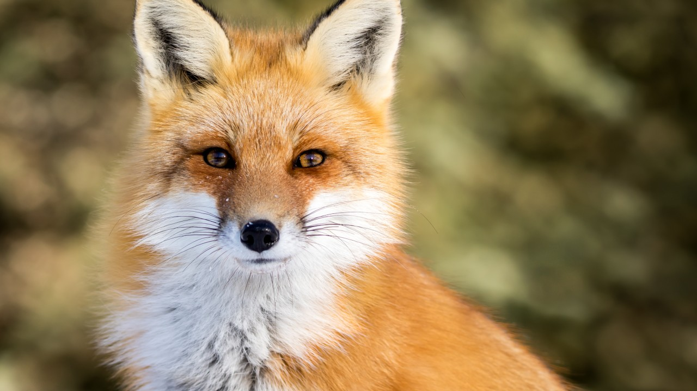

Foxes make up a large part of the dog family. What is to be considered
a fox is a question of definition. Some believe the name should be
reserved for species in the genus Vulpes, while others include all
species where "fox" has become part of the name. In general, foxes
are the smallest and most slender members of the canine family.

Foxes are mostly small and slender predators, most species weigh between two and five kg. The smallest is the fennel with 0.8 kg, while the largest is "small ear azure". microtis with 9 kg. They often have large ears, a long, bushy tail and a pointed snout. The coat is mostly shades of gray and brown with white and black spots. The red fox is more reddish, but has a black color variant in the silver fox. The mountain fox also comes in two color variants; white fox and blue fox.